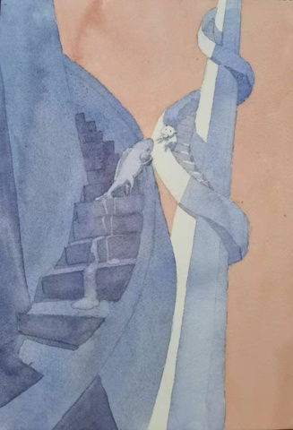
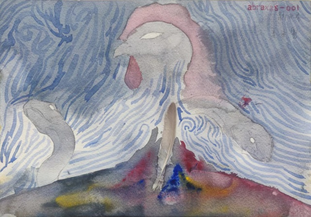
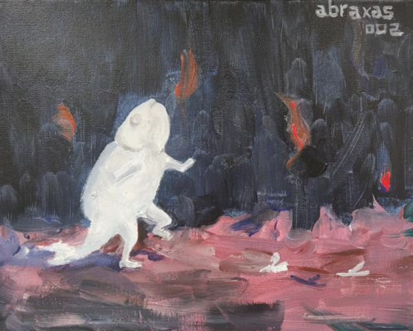
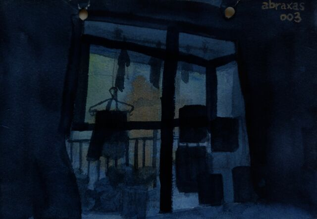
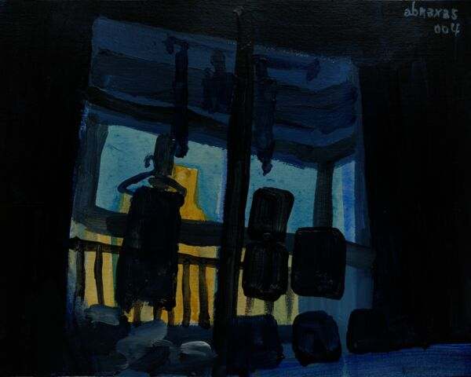
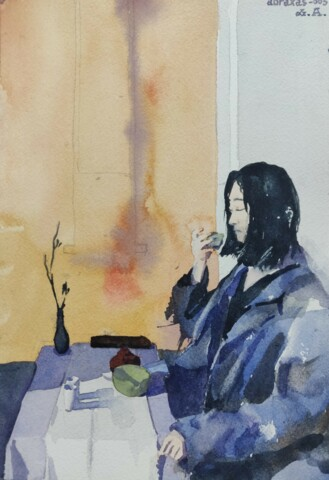
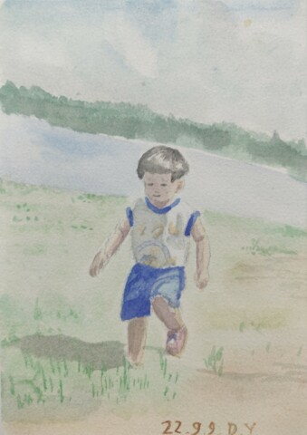

人造上帝#
参见
被抛弃的预感#
{kind=link}

被抛弃的预感#
我总是在准备逃跑。平日里脚上没有行动，脑子在不停地翻滚寻找危险的迹象，一旦有所发现，就像为了证明了什么一般，双脚就踉踉跄跄，狂奔又急停，蒙头跑一会儿可能又折返。
这样的预感会先产生，之后只需要再套上一点蛛丝马迹就可以应验，我作为预言家的贤明又添了一分。
世界在迷雾里#
{kind=link}

世界在迷雾里#
学步#
{kind=link}

学步#
不熟悉材料，还要多多练习。
蓝色失眠，draft#
{kind=link}

蓝色失眠，draft#
最近两周又开始睡不好，每天都在床上辗转到四五点。我的大脑和眼睛似乎被同一个双掷开关的两头控制：清醒的时候无法思考，闭上眼睛大脑就开始无规律运作。有时在床上无法感受到困意，我就拿出瑜伽垫铺在地上躺下，似乎让我觉得安稳一些。
杭州的夏天一到四点就开始蒙蒙亮，透过贴满画的落地窗，外面的天空是蓝色的。
蓝色失眠，lighter#
{kind=link}

蓝色失眠，lighter#
本来想作为 《蓝色失眠，draft》 的正式版，也因为那张送人了，想好好再画一张。
对丙烯的掌握依然不好，毕竟没系统训练过。相比前一张，大体的氛围依然存在，只是窗台的天色更亮了些，更接近的我快要睡着的清晨时分。
茶舍#
{kind=link}

茶舍#
i 小时候#
{kind=link}

i 小时候#
👤YY 画的小时候的我。
中年发福鱼#
{kind=link}
中年发福鱼#
👤YY 画鱼潮的第二张，原照片是在文新站的一家咖啡厅里拍的，YY 备考的那段时间，没有什么户外活动 也不吵架 的休息日基本会去。点上一杯九块九的美式，把电脑支起来就能坐一天。她看她的 CPA 课程，蓝色背景下西装革履的老师已三倍速不停地叭叭叭。我没有固定的事情要做，偶尔看看艺术史相关的 wiki，写 艺术家史，或者是写写代码，不过好像没写出什么来。
高中开始我的胡子就长得快又长，怕变粗变硬总是不敢刮，顶着这样的小胡子度过了三年。上了大学开始每天早晨把胡子刮下，太阳落下山唇边又冒出了短短的一茬。
去年学画（对，我想起我的 辞职为学画（一） 怎么还没写完呢？已经快过去一年了 2024.01: 现在写完了）的时候有一段时间故意不刮胡子，一周后胡子拉碴好似另外一个人。这激起了 YY 的 恶趣味 好奇心，要我一周不刮胡子。尽管有诸多不情愿，最后也是拗不过，蓄了一周。
说回来画本身，YY 的观察能力和对水彩的把控能力都很好，是带着思考在画的，实在不像是初学者，可怕哉！
{kind=link}
如果你有任何意见，请在此评论。 如果你留下了电子邮箱，我可能会通过 回复你。